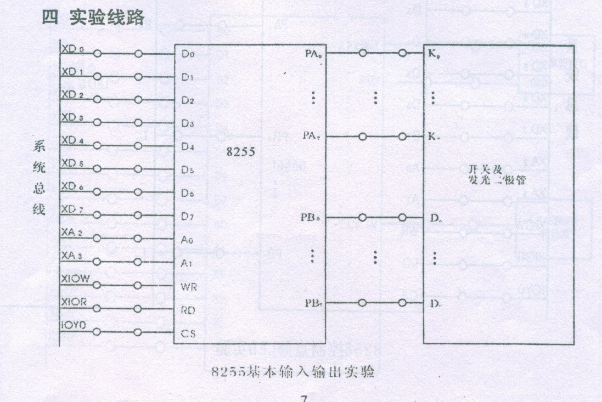
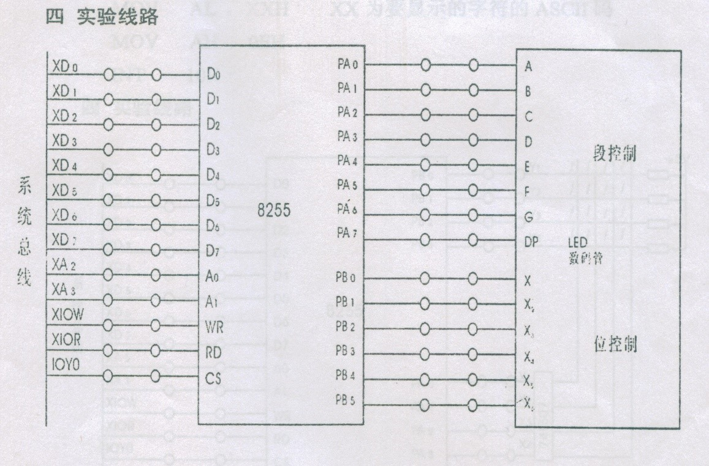

8255基本输入输出、8255数码管显示实验
1. 实验目的
了解和掌握8255的输入输出方式，掌握二极管、数码管控制的方式
2. 实验内容（步骤）
基本输入输出实验
（1）按照实验原理图连线。

（2）编写控制程序，使得8255的A口为输入口，B口为输出口，通过A口读到K的控制信号，转而通过B口输出到D的灯管中。
（3）编译、连接、运行后，在实验系统上拨动不同K的开关，观察到对应的二极管亮起。
数码管控制实验
（1）按照实验原理图连线。

（2）编写控制程序，使得A口为输出，B口也为输出，A口控制数码管内容的显示，B口选择数码管的种类。将数码管显示的10个数字保存下来，利用循环、延迟的方式，制作出从数字9到数字0倒计时的效果。并且在数字变换的循环外层嵌套循环，使得循环可以一直进行。使用16H的1号指令判断有无键盘输入，如果有，则退出程序。
（3）编译、连接、运行，查看倒计时程序是否正常运行。
3. 实验原理、程序记录
（1）实验根据8255的输入输出方式原理，来设计线路，达到需要的输出效果。前一个实验使用到了A口作为输入口的使用方法，后一个实验用到了两个口均为输出口的使用方法。当作为输入口的时候，可以使用IN指令，使得数据通过总线读到系统中，在这个基础上可以使用输出口将读到的数据传出，达到控制的目的。
（2）程序1：
1 | ; 基本输入输出点亮二极管程序 |
2 | ;T8255-1.asm |
3 | ;8255基本输入输出实验 |
4 | |
5 | IOY0 EQU 0E000H ;片选IOY0对应的端口始地址 |
6 | MY8255_A EQU IOY0+00H*4 ;8255的A口地址 |
7 | MY8255_B EQU IOY0+01H*4 ;8255的B口地址 |
8 | MY8255_C EQU IOY0+02H*4 ;8255的C口地址 |
9 | MY8255_MODE EQU IOY0+03H*4 ;8255的控制寄存器地址 |
10 | |
11 | STACK1 SEGMENT STACK |
12 | DW 256 DUP(?) |
13 | STACK1 ENDS |
14 | |
15 | DATA1 SEGMENT |
16 | MES DB 'Press any key to exit!',0AH,0DH,0AH,0DH,'$' |
17 | DATA1 ENDS |
18 | |
19 | CODE SEGMENT |
20 | ASSUME CS:CODE |
21 | |
22 | START: MOV AX,DATA1 |
23 | MOV DS,AX |
24 | MOV DX,OFFSET MES ;显示退出提示 |
25 | MOV AH,09H |
26 | INT 21H |
27 | |
28 | MOV DX,MY8255_MODE ;初始化8255工作方式 |
29 | MOV AL,10010000B ;工作方式0，A input B output |
30 | OUT DX,AL |
31 | |
32 | LOOP1: MOV DX,MY8255_A ;读A口 |
33 | IN AL,DX |
34 | MOV DX,MY8255_B ;写B口 |
35 | OUT DX,AL |
36 | |
37 | MOV AH,1 ;判断是否有按键按下 |
38 | INT 16H |
39 | JZ LOOP1 ;无按键则跳回继续循环，有则退出 |
40 | |
41 | QUIT: MOV AX,4C00H ;结束程序退出 |
42 | INT 21H |
43 | |
44 | CODE ENDS |
45 | END START |
（3）程序2：
1 | ;控制倒计时数码管程序 |
2 | IOY0 EQU 0E000H ;片选IOY0对应的端口始地址 |
3 | MY8255_A EQU IOY0+00H*4 ;8255的A口地址 |
4 | MY8255_B EQU IOY0+01H*4 ;8255的B口地址 |
5 | MY8255_C EQU IOY0+02H*4 ;8255的C口地址 |
6 | MY8255_MODE EQU IOY0+03H*4 ;8255的控制寄存器地址 |
7 | |
8 | STACK1 SEGMENT STACK |
9 | DW 256 DUP(?) |
10 | STACK1 ENDS |
11 | |
12 | DATA SEGMENT |
13 | MES DB 'Press any key to exit!',0AH,0DH,0AH,0DH,'$' |
14 | LA DB ? ;定义数据变量 |
15 | LB DB ? |
16 | ;把从9到0的数字放在NUM数组里 |
17 | NUM DB 6FH,7FH,07H,7DH,1101101B,66H,4FH,5BH,06H,3FH |
18 | DATA ENDS |
19 | |
20 | CODE SEGMENT |
21 | ASSUME CS:CODE,DS:DATA |
22 | |
23 | START: MOV AX,DATA |
24 | MOV DS,AX |
25 | MOV DX,OFFSET MES ;显示退出提示 |
26 | MOV AH,09H |
27 | INT 21H |
28 | |
29 | MOV DX,MY8255_MODE ;定义8255工作方式 |
30 | MOV AL,80H ;工作方式0，A口和B口为输出 |
31 | OUT DX,AL |
32 | |
33 | MOV DX,MY8255_A ;写A口发出的起始数据 |
34 | MOV AL,011111B |
35 | OUT DX,AL |
36 | MOV LA,AL |
37 | |
38 | infinite: MOV CX,10 |
39 | MOV AX,0 |
40 | MOV SI,AX |
41 | |
42 | LOOP1: MOV DX,MY8255_B ;写B口发出的起始数据 |
43 | MOV AL,NUM[SI] ;9 |
44 | ADD SI,1 |
45 | OUT DX,AL |
46 | MOV LB,AL |
47 | CALL DALLY |
48 | MOV AH,1 ;判断是否有按键按下 |
49 | INT 16H |
50 | JNZ QUIT |
51 | LOOP LOOP1 |
52 | JMP infinite |
53 | |
54 | |
55 | QUIT: MOV AX,4C00H ;结束程序退出 |
56 | INT 21H |
57 | |
58 | DALLY PROC NEAR ;软件延时子程序 |
59 | PUSH CX |
60 | PUSH AX |
61 | MOV CX,3FFFH |
62 | D1: MOV AX,0FFFFH |
63 | D2: DEC AX |
64 | JNZ D2 |
65 | LOOP D1 |
66 | POP AX |
67 | POP CX |
68 | RET |
69 | DALLY ENDP |
70 | |
71 | CODE ENDS |
72 | END START |
5. 实验结果及分析
简单的输入输出实现能够实现使用开关控制二极管的目的，推动K1可以看到D1亮起，推动K3可以看到D3亮起。
数码管倒计时可以达到要求，程序运行之后，数码管将显示从9到0的十个数字，中间间隔一定时间。并且，当需要退出的时候，只需要在键盘上敲击任意键，数码管就会停止变换，并且程序退出。
倒计时实验中，改动B口输出，可以控制数码管亮起的数量，可以选择哪一个或者哪几个数码管亮起。
6. 实验体会
（1）8255的工作方式让我对芯片工作的流程认知更加清晰了，这一次实验有自己构造倒计时的要求，所以就需要自己考虑控制字、控制信号的问题，这些之前的实验其实很多时候是在已有的基础上改动的，就没那么概念清晰。
（2）构造倒计时的过程中，又复习了数组的使用、循环的使用、跳转的时候标志位的使用等等知识，应该说用汇编语言实现这样需求的过程还是很体现综合能力的。虽然这些东西之前都接触过和用过，但是也有很大程度上会遗忘的，用一用印象明显更深了。
（3）对于实验的控制系统部件又多熟悉了一些，也是因为8255这次用得比较简单，简单地进行输入输出就可以了，所以就很能够让我捋清楚连线的时候是在构造怎么样的过程。